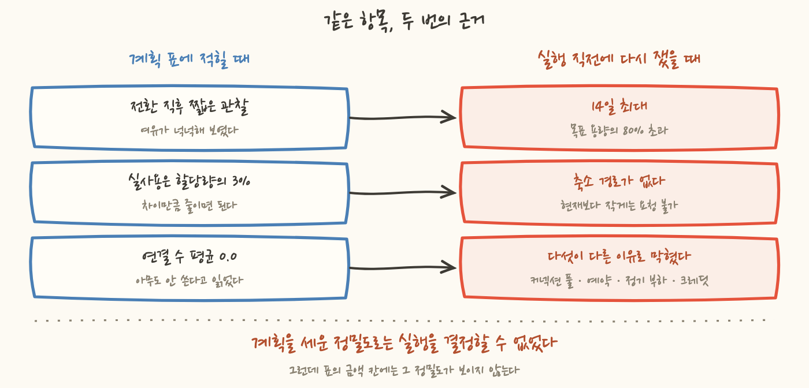
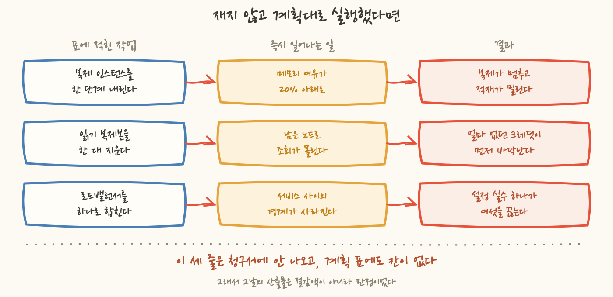

아침에 표를 열었습니다. 왼쪽에는 아직 못 채운 갭이 있고 오른쪽에는 그 갭을 메울 항목들이 줄지어 있었어요. 상태 칸에 적힌 문구는 대부분 같았습니다. 금액 확정, 작업만 남음.
저녁에 같은 표를 다시 열었을 때 갭은 오히려 늘어 있었습니다. 하루를 논 것도 아니에요. 그날 실제로 적용한 작업이 넷이나 있었습니다. 그런데 표에 적혀 있던 항목들이 실행하려고 다시 재는 순간 하나씩 닫혔어요.
이 글은 계획이 실측에 지워진 하루의 기록입니다. 그날 손에 남은 것은 절감액이 아니라 "이건 안 된다"는 판정 네 건이었어요. 그리고 그 판정들은 표의 어느 칸에도 들어갈 자리가 없었습니다.
먼저 그 표가 어떻게 생겼는지부터 적을게요. 항목 이름, 근거, 예상 금액, 상태. 네 칸입니다. 상태 칸에는 "조사 중", "금액 확정, 작업만 남음", "적용 완료" 중 하나가 들어가요. 그날 남아 있던 항목들은 대부분 가운데 칸에 있었습니다.
가운데 칸의 뜻은 이런 것이었어요. 줄일 수 있는지는 이미 확인했고, 얼마가 빠지는지도 계산했고, 남은 것은 손을 움직이는 일뿐이다. 계획을 세울 때 각 항목을 한 번씩 조사해 그 칸에 넣어뒀으니까요.
네 줄을 하나씩 열어볼게요. 순서는 그날 부딪힌 순서 그대로입니다. 공통점은 미리 말해두는 게 낫겠어요. 넷 다 코드나 권한 때문에 막힌 게 아닙니다. 재보니 조건이 달랐거나 애초에 그 조건을 안 재고 계획에 적었던 겁니다.
첫 줄과 둘째 줄은 같은 대상이었습니다. 원본의 변경을 계속 읽어 하류로 흘려보내는 복제 작업이 도는 인스턴스예요. 하나는 그 인스턴스의 클래스를 한 단계 아래로 내리는 것이고 다른 하나는 붙어 있는 스토리지 할당량을 줄이는 것이었어요. 계획 표에는 둘 다 금액까지 적혀 있었습니다.
클래스를 내리기 전에 실사용을 다시 쟀어요. 이 시리즈에서 사이징을 다룬 편들 때문에 생긴 습관인데 여유는 최솟값으로, 실사용은 최댓값으로 봅니다. 메모리 여유가 가장 없던 순간을 실사용으로 뒤집어 14일 구간의 최대를 뽑았더니 이런 값이 나왔습니다.
왜 짧은 관찰이 낙관적이었는지는 짚어볼 만합니다. 그 인스턴스는 얼마 전에 전환 작업을 거친 직후였어요. 전환 직후에는 실려 있는 일이 아직 평소 수준이 아니고 주기적으로 도는 작업도 한 바퀴를 다 돌지 않은 상태입니다. 그 시점의 관찰은 "평소" 가 아니라 "조용한 구간" 을 잰 것이었어요.
그러면 여유 20% 는 왜 부족한가. 이게 제가 그날 한참 붙잡고 있던 질문입니다. 20% 면 5분의 1이니 얼핏 여유로 보이거든요. 그런데 메모리는 성격이 다릅니다. CPU 는 부족하면 느려지고, 메모리는 부족하면 죽습니다. 프로세스가 종료되면 복제가 멈추고, 복제가 멈추면 그 뒤에 붙어 있는 적재가 통째로 밀려요.
게다가 이 값은 14일의 최대일 뿐, 15일째의 최대가 아닙니다. 배치가 몰리는 날이나 원본 쪽에서 대량 변경이 도는 날은 이 최대를 넘길 수 있어요. 여유 20% 는 그런 날을 흡수하는 몫인데 클래스를 내리면 그 몫이 사라집니다. 기준선 CPU 까지 함께 내려가고요. 이 계열은 기준선만큼의 성능이 상시 보장되고 그 위로 올려 쓰는 동안은 크레딧을 꺼내 쓰는 구조인데, 클래스를 내리면 그 상시 보장분이 같이 내려갑니다. 밀린 뒤 따라잡는 속도가 거기서 떨어져요.
두 번째 줄은 같은 인스턴스에 붙은 스토리지였습니다. 이건 더 쉬워 보였어요. 실사용이 할당량의 3% 였으니까요. 97% 가 비어 있는 셈이고 그 비어 있는 몫에 대해서도 요금은 그대로 나갑니다.
그래서 축소를 요청했고 이런 응답을 받았습니다.
이 제약 자체는 낯선 게 아닙니다. 관계형 데이터베이스에서도 스토리지는 늘릴 수만 있고 줄일 수는 없어요. 문제는 계획을 세울 때 그 제약을 안 확인했다는 것입니다. 실사용과 할당량의 차이만 보고 "줄이면 되겠다"로 넘어갔어요. 금액 칸에는 그 차이에 단가를 곱한 값이 이미 적혀 있었고요.
우회로가 없지는 않았습니다. 새 인스턴스를 작은 스토리지로 만들고 돌고 있는 작업을 그쪽으로 옮기는 방법이에요. 그런데 여기서 두 개가 걸렸습니다.
재적재 자체는 실패하는 작업이 아닙니다. 정상 절차예요. 다만 그 절차는 대상을 한 번 비우고 시작합니다. 그리고 그 시간 동안 원본의 변경이 하류에 늦게 도착하고, 그 지연은 데이터를 보는 쪽에서 "수치가 안 맞는다"로 나타납니다. 요금을 줄이려다 그 문의를 받는 건 맞바꿀 만한 거래가 아니었어요.

세 번째 줄은 데이터베이스 읽기 복제본이었습니다. 후보가 여섯 대였고, 그중 둘에는 연결 수 평균이 0.0 이라는 근거까지 괄호로 붙어 있었어요. 아무도 안 쓰는 복제본이면 지워도 되니까요.
자세한 조사 과정은 17편에 적었으니 여기서는 결론만 옮길게요. 평균 0.0 이라고 적혀 있던 둘은 최대를 보니 0 이 아니었습니다. 사람이 조회 도구로 붙고 있었어요. 그중 하나는 그 경로만 옮기면 돼서 열렸고 나머지 다섯은 각각 다른 벽에 막혔습니다. 커넥션 풀이 상시 유지되는 곳, 예약이 그 자리를 덮고 있어 꺼도 요금이 그대로인 곳, 봉우리가 아니라 정기 부하인 곳, 그리고 크레딧을 따로 재보니 일부 클러스터는 이미 바닥이라 줄일 대상이 아니라 늘릴지를 검토할 대상이었어요. 하나의 검사로 다 걸러지지 않았습니다. 계획 표에 적혀 있던 금액 중 5분의 1 남짓만 남았어요.
네 번째 줄은 로드밸런서 통합이었습니다. 이건 성격이 조금 달라요. 기술 조건은 전부 통과했습니다. 규칙 수도 여유가 있었고, 인증서도 얹을 수 있었고, 호스트 이름으로 가르는 것도 됩니다. 그런데 통합하면 서비스별로 나뉘어 있던 격리가 사라져요. 지금은 설정 실수가 그 서비스에서 끝나는데, 통합하면 규칙 하나의 오류가 여섯을 동시에 끊을 수 있는 구조가 됩니다. 그 거래를 하지 않기로 하고 접었고 그 판단은 19편에 적었습니다.
여기서 짚고 싶은 건 닫힌 방식이 두 갈래라는 점이에요.
앞쪽은 재현이 됩니다. 다음 사람이 같은 구간을 같은 통계로 재면 같은 값이 나와요. 뒤쪽은 다릅니다. 숫자로는 "가능" 이 나오고 안 하기로 한 이유는 숫자 바깥에 있어요. 그래서 뒤쪽일수록 근거를 문장으로 남겨야 합니다. 안 남기면 다음 분기에 누군가 같은 표를 만들고 같은 줄을 다시 적어요. 기술 조건이 통과하니까요.
닫힌 이야기만 했는데, 그날 실제로 적용한 것도 있었습니다. 넷이에요.
이미지 저장소 정리가 그중 가장 컸어요. 16곳에서 오래된 이미지를 걷어냈고 손댄 곳 합산으로 97% 가 빠졌습니다. 남긴 것은 현재 배포에 쓰이는 것과 되돌릴 때 쓸 몇 개예요. 16곳은 전체가 아니라 나머지입니다. 태그 전략이 달라 개수 규칙이 위험한 곳과 배포본이 컷 밖에 있는 곳은 13편에서 뺐고, 참조를 끝내 못 찾은 저장소는 14편에서 손대지 않고 남겼거든요. 이건 저장 용량에 대한 요금이라 다음 청구 주기부터 바로 반영됩니다. 다만 그날의 표에는 금액을 못 적었어요. 이틀 뒤 청구서를 봐야 확정이 되기 때문입니다.
객체 스토리지 등급 전환은 한술 더 뜹니다. 켠 날의 절감이 0 이에요. 접근이 없는 객체가 아래 등급으로 내려가는 데 30일이 걸리고 더 아래로는 90일이 걸립니다. 이 이야기는 15편에서 다뤘으니 넘어갈게요. 한 가지만 옮겨두면 이 항목은 하한이 0 이 아닙니다. 등급이 하나도 안 내려가면 모니터링 요금만 나가니까요. 요점은 그날 적용한 작업의 결과가 그날의 표에 안 나온다는 것입니다.
나머지 둘은 짧습니다. 개발 서버는 주말 이틀을 꺼두는 조건을 넣었고, 넷째 줄은 예전에 "정리 완료" 로 적어둔 서비스의 잔재였어요. 자원은 지웠는데 그것을 가리키던 설정이 그대로 남아 있었습니다.
그래서 저녁 표는 이렇게 됐습니다. 왼쪽 갭은 그대로거나 늘었고, 오른쪽에는 "불가" 가 네 줄, "적용 완료, 금액 미확정" 이 네 줄 생겼어요. 확정된 절감액이 늘어난 줄은 하나도 없었습니다.
저녁에 표를 보면서 한동안 앉아 있었어요. 갭이 늘어난 표를 보고할 방법을 찾는 시간이었습니다. 그러다 생각이 한 칸 옮겨갔어요. 닫힌 항목들은 오늘 잃은 것이 아니라는 겁니다.
복제 인스턴스는 지금 부하로는 처음부터 내릴 수 없었어요. 스토리지는 처음부터 줄일 수 없었고 읽기 복제본 다섯 대는 처음부터 지울 수 없었습니다. 그것들이 표에 적혀 있던 동안에도 실현 가능했던 적이 없어요. 사라진 것은 금액이 아니라 판정처럼 적혀 있던 후보입니다.
그렇다고 계획을 세운 것 자체가 잘못이었다는 말은 아닙니다. 계획 단계에서 손에 쥘 수 있는 것은 후보까지입니다. 잘못은 후보를 세운 것이 아니라 후보를 판정처럼 적고 그 옆의 금액 칸까지 채운 것이었습니다. 표는 두 문장을 같은 모양으로 적을 수 있게 돼 있었고, 그래서 "확인해볼 것" 이 "할 것" 으로 읽혔어요.
그리고 그 줄들을 실행 전에 지웠는지 실행 후에 지웠는지는 전혀 다른 이야기예요. 스토리지 축소는 요청 자체가 받아들여지지 않으니 빼고, 나머지 셋을 재지 않고 그대로 실행했다면 어떻게 됐을지를 적어봤습니다.

세 줄 다 가정입니다. 실제로 일어난 일이 아니니 증명할 수도 없어요. 그런데 앞의 두 줄은 출발점이 잰 값입니다. 메모리 최댓값이 목표 용량의 80% 를 넘긴 것도, 크레딧이 바닥인 것도 잰 값이에요. 그 상태에서 실행하면 무엇이 뒤따르는지는 취향이 아니라 그 자원의 동작 방식이고요. 세 번째 줄은 다릅니다. 여기서는 잰 값이 아무것도 막지 않았고, 오른쪽 칸은 그래서 결과가 아니라 제가 안 내주기로 한 것의 이름입니다.
그러니까 이 하루는 두 가지로 읽힙니다. "계획의 상당 부분이 사라졌고 갭이 늘었다" 로도 읽히고, "그대로 실행했으면 값을 치렀을 작업 셋을 실행 전에 걸러냈다" 로도 읽혀요. 뒤의 문장은 반사실이라 증명할 수 없고, 셋 중 하나는 잰 값이 아니라 구조를 보고 접은 것입니다. 같은 하루인데 앞의 문장에만 표의 칸이 있습니다.
그래서 마지막으로 남은 질문은 이거였어요. 목표를 못 채운 날 무엇을 보고할 것인가.
그날 제가 고른 답은 닫힌 항목의 목록과 그 근거였습니다. 항목 이름 옆에 "불가" 만 적으면 다음 사람이 같은 표를 만들 때 그 줄을 또 적어요. 실사용이 낮으니 줄일 수 있어 보이고, 연결 수 평균이 0.0 이니 지울 수 있어 보이니까요. 그런데 "불가" 옆에 14일 최대와 API 응답과 크레딧 값이 같이 적혀 있으면 그 줄을 다시 적기는 어려워집니다.
11편에서 절감 과제의 산출물은 절감액과 판정 근거와 막힌 지점의 기록 셋이라고 적었습니다. 스무 편을 다 쓰고 보니 가운데 것이 제일 두꺼웠어요. 이 시리즈를 쓰는 동안 제 손을 가장 많이 거친 작업도 자원을 지우거나 줄이는 일이 아니었습니다. 줄일 수 있는지를 확인하는 일이었습니다. 그리고 그 확인은 자주 "안 된다" 로 끝났고, 안 된다는 결과는 표에서 빈칸으로 보입니다. 실제로는 빈칸이 아닌데요.
마지막 편을 이 하루로 고른 이유가 그것입니다. 이날은 절감액이 하나도 확정되지 않은 날이고, 그래서 절감 작업이 실제로 무엇을 만들어내는지가 가장 잘 보이는 날이었어요. 그날 만들어진 것은 판정 넷과 근거 넷, 그리고 금액이 아직 안 붙은 적용 넷이었습니다.
정리하면 이렇게 됩니다. "할 수 있었는데 안 했다" 와 "할 수 없다는 것을 확인했다" 는 표에서 똑같이 빈칸으로 보이지만, 다음 사람에게는 완전히 다른 물건입니다. 앞의 것은 아무것도 남기지 않습니다. 뒤의 것은 같은 조사를 반복하지 않게 해주고요. 그날 저녁의 표는 앞의 것처럼 보였고 실제로는 뒤의 것이었습니다. 그 차이를 표가 못 담으면 담을 자리는 문장밖에 없어요. 이 스무 편이 그 문장들입니다.